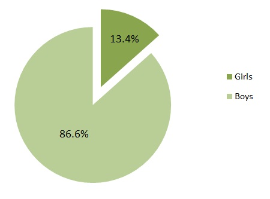
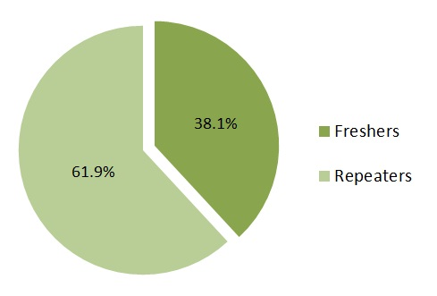

{% include FBLikesScript.html %}
JEE-2012 Namewise Results
{% include header2012.html %}
Analysis & Graphs
To view the complete rank list,
Click Here
{% include socialtools.html %}
Institute Distribution (top 1000 ranks)
JEE 2012 Rankwise Marks (for >100 ranks)
Loading... Please wait
Gender Wise Distribution Of Selected Candidates

Attempt Distribution of Selected Candidates

State Wise Selection Counts
Age Based Selection Count
Center Wise Selection Counts
{% include footer.html %}